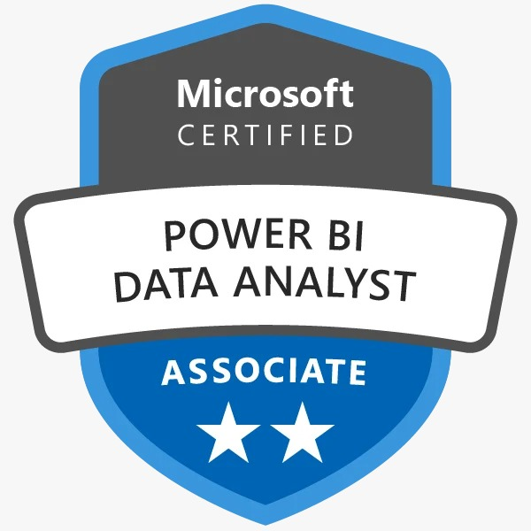

AI & machine learning
RAG · LoRA · Fine-tuning · Vector embeddings · Semantic search · Agentic workflows · Scikit-learn · SHAP
Yamini Srija Koulury
01 / THE PERSON BEHIND THE WORK
Hi there, I’m Srija!
I’m an AI Data Engineer with a master’s in Data Science from Indiana University. I build LLM applications, reliable cloud data pipelines, and analytics that turn complex information into something useful.
My work connects research with practical engineering: from fine-tuning language models for clinical AI to building semantic course search and automating receipt tracking. I’m especially interested in thoughtful systems that solve real, everyday problems.
02 / MY TOOLKIT
From raw data
to something that works.
RAG · LoRA · Fine-tuning · Vector embeddings · Semantic search · Agentic workflows · Scikit-learn · SHAP
ETL / ELT · REST APIs · Data modeling · Validation · Query optimization · Pipeline monitoring
Interactive dashboards · Data storytelling · Predictive modeling · Full-stack applications
03 / IDEAS INTO PRACTICE
Click on a folder
to take a look ↙
04 / ALONG THE WAY
Research Analyst
Evaluating the MV-Ed mechanical ventilation education simulator through resident feedback across 32 practice cases. Documenting findings on case clarity and usability to guide follow-up improvements.
Data Engineer & Analyst
Aligning metrics across three reporting platforms, automating SQL validation, and building Power BI dashboards. Standardized data definitions improved downstream reporting accuracy by 30%.
Research Assistant
Built an obstetric triage research model with Llama 3 8B, LoRA fine-tuning, and gated RAG. Achieved 94.0% Clinical Safety Accuracy and a 93.5% F1 score on the project evaluation, using a dataset of 788 patient scenarios.
Data Engineer Intern
Engineered a Python UDP pipeline and containerized ETL workflows with Docker and AWS. Optimized SQL queries to accelerate backend retrieval by 25% and converted 50+ web templates into dynamic PyQt5 layouts.
Data Analytics Intern
Cleaned and optimized Materials Management data for an ERP upgrade, increasing data precision by 20%. Integrated cloud platforms with SAP APIs and streamlined procurement workflows.
Data Science Research Intern
Built automated scraping and visualization pipelines in R and Python, reducing manual data processing effort by 40%. Developed and tested analytical applications with a focus on reliable reporting.
05 / THE FOUNDATION
Indiana University
Bloomington, Indiana
Manipal Academy of Higher Education
Dubai, UAE

06 / WHAT’S NEXT?
Have a meaningful problem to solve?
I’d love to hear about it.